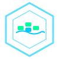

Práctica 10 — Virtualización y Contenedores
Nginx sobre Alpine Linux. Imagen personalizada con usuario no‑root y server tokens desactivados.
Puerto 80 → 8080PostgreSQL 15 en Alpine. Volumen persistente db_data con respaldo automático al host.
Transferencia de archivos al volumen compartido web_content, accesible directamente por Nginx.